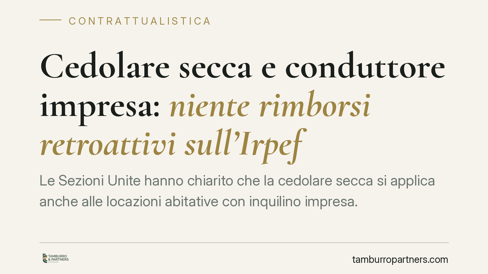

Cedolare secca e conduttore impresa: niente rimborsi retroattivi sull'Irpef
Le Sezioni Unite hanno chiarito che la cedolare secca si applica anche alle locazioni abitative con inquilino impresa. Resta però aperto il nodo pratico: i proprietari che negli anni passati non esercitarono l'opzione possono chiedere al Fisco il rimborso dell'Irpef già pagata? La risposta, in linea di massima, è no. Vediamo perché e cosa valutare.

Il punto di partenza
Nota preliminare: il tema è di natura tributaria, pur toccando la disciplina del contratto di locazione. Lo trattiamo perché l'inquadramento del contratto incide direttamente sul regime fiscale applicabile.
Le Sezioni Unite della Corte di Cassazione sono intervenute sulla possibilità di applicare la cedolare secca anche quando l'immobile a uso abitativo è locato a un'impresa (conduttore che utilizza l'alloggio, ad esempio, per i propri dipendenti). L'orientamento conferma una lettura più favorevole al locatore rispetto alle posizioni restrittive dell'Amministrazione finanziaria.
*[Estremi precisi della pronuncia da verificare prima della pubblicazione: numero, anno e sezione vanno blindati sulla fonte ufficiale. L'anno indicato dalla fonte secondaria è da confermare.]*
Inquadramento normativo
La cedolare secca è disciplinata dall'art. 3 del D.Lgs. 23/2011. Si tratta di un regime opzionale e sostitutivo: in luogo della tassazione ordinaria del canone ai fini Irpef (con relative addizionali) e delle imposte di registro e di bollo sul contratto, il locatore applica un'imposta a aliquota fissa sul canone.
Il punto decisivo è che il regime non opera in automatico: richiede un'opzione espressa da parte del proprietario, in sede di registrazione del contratto o nelle annualità successive secondo le modalità previste. In assenza di opzione, si applica la tassazione ordinaria.
La questione rimessa alle Sezioni Unite riguardava la natura del conduttore: l'Agenzia delle Entrate tendeva a escludere la cedolare quando l'inquilino era un'impresa. Le Sezioni Unite valorizzano invece la destinazione abitativa dell'immobile, a prescindere dalla qualità soggettiva del conduttore.
Perché il chiarimento non apre la strada ai rimborsi
Qui occorre distinguere con nettezza due piani.
Il primo è l'efficacia interpretativa per il presente e il futuro: chi oggi stipula (o rinnova) una locazione abitativa con conduttore impresa può esercitare l'opzione con maggiore serenità.
Il secondo è il recupero del passato, ed è tutt'altra cosa. Chi negli anni scorsi non esercitò l'opzione ha subito legittimamente la tassazione ordinaria: in assenza di scelta, l'Irpez versata non era indebita, ma dovuta. La cedolare secca è un beneficio che presuppone una manifestazione di volontà; non averla espressa a suo tempo non genera, di per sé, un credito verso il Fisco.
In altri termini, la pronuncia rimuove un ostacolo interpretativo, ma non trasforma retroattivamente in "indebito" un'imposta pagata secondo il regime ordinario che il contribuente, non optando, aveva di fatto accettato.
Il nodo dei termini
Anche a voler ipotizzare margini di recupero in situazioni particolari, resta il limite temporale. Per il rimborso delle imposte dirette il riferimento è l'art. 38 del DPR 602/1973, che prevede un termine di decadenza (indicato in 48 mesi dal versamento) *[riferimento e termine da verificare sul testo vigente]*. Decorso quel termine, l'istanza è comunque preclusa.
Implicazioni pratiche per il locatore
Per il proprietario che loca a imprese il messaggio è duplice. Guardando avanti, si apre uno spazio di risparmio fiscale concreto, da valutare caso per caso. Guardando indietro, non esiste un automatismo di rimborso: chi non optò ha, nella grande maggioranza dei casi, pagato il dovuto.
Cosa fare in concreto
- Verifica i tuoi contratti in corso: individua le locazioni abitative con conduttore impresa in cui applichi ancora la tassazione ordinaria.
- Valuta l'opzione per le annualità future secondo le modalità e i termini previsti, con un calcolo di convenienza sul canone.
- Non dare per scontato alcun rimborso del pregresso: prima di investire tempo e costi in un'istanza, fai analizzare la specifica posizione.
- Controlla i termini: se intendi comunque presentare richieste, verifica subito la decorrenza dei versamenti rispetto al limite di decadenza.
- Documenta tutto: contratti, registrazioni e versamenti sono la base di qualunque valutazione successiva.
Consigliamo di affrontare la scelta del regime già in fase di stipula o rinnovo, quando il margine decisionale è pieno e i costi di correzione sono minimi.
Disclaimer
Contributo informativo a cura di Tamburro & Partners Avvocati – Avv. Giuseppe Tamburro. Non costituisce parere legale.
Ogni contratto ha il suo equilibrio.
Se vuoi una revisione delle clausole o una redazione su misura, scrivi allo studio. Ti rispondiamo entro un giorno lavorativo.